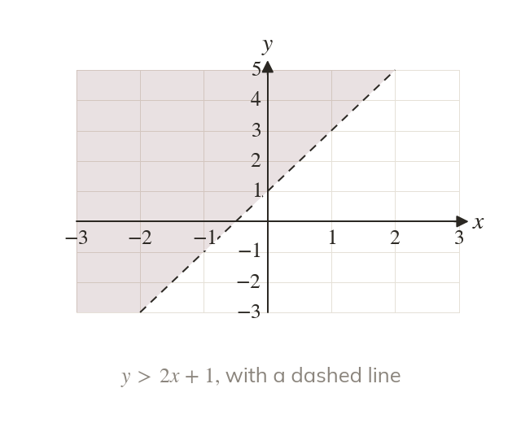
Dashed or solid
A strict inequality, such as has a dashed boundary, because the points on the line are not included. With ≤ or ≥ the boundary is solid.
An inequality in x and y describes a whole region of the plane, and several inequalities together describe the region where all of them hold. A sketch of a region must show which boundaries are included, by drawing them solid or dashed.
Work down the page at your own pace. Write every answer in your book first, then click to check it.
Read each card, then follow the worked examples one step at a time.

A strict inequality, such as has a dashed boundary, because the points on the line are not included. With ≤ or ≥ the boundary is solid.
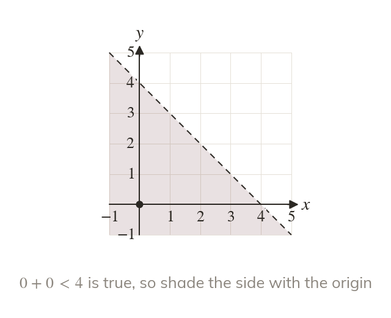
Choose a point that is not on the boundary, such as the origin, and substitute it. If the inequality is true there, the region is on that side.
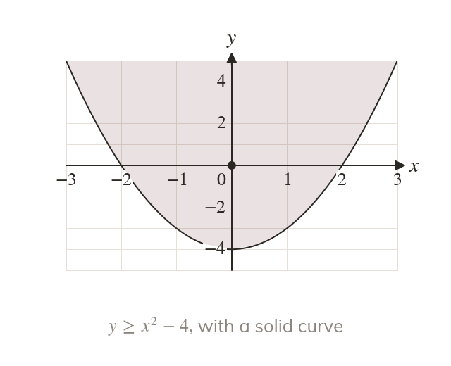
The inequality has the curve as a solid boundary. The origin gives which is true, so the region is above the curve.
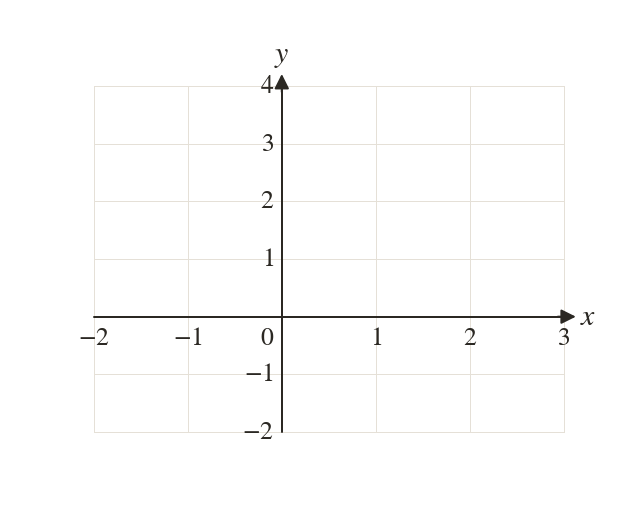
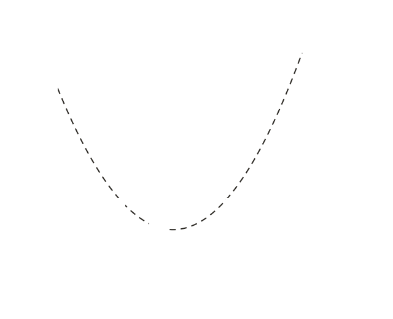
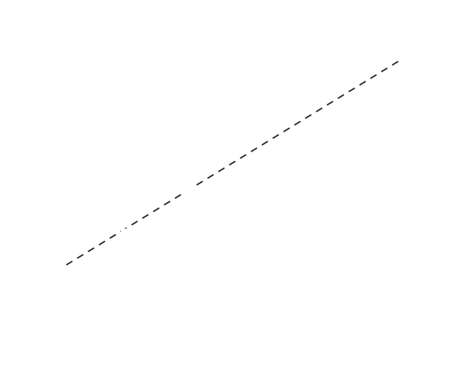
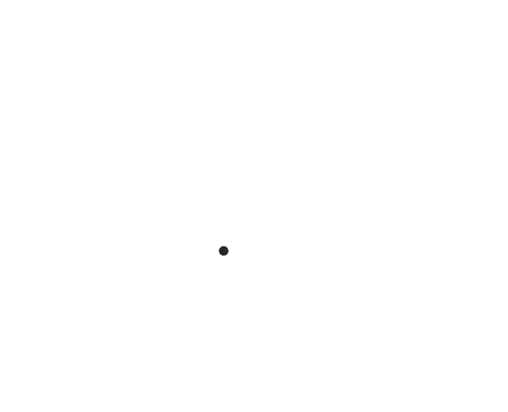
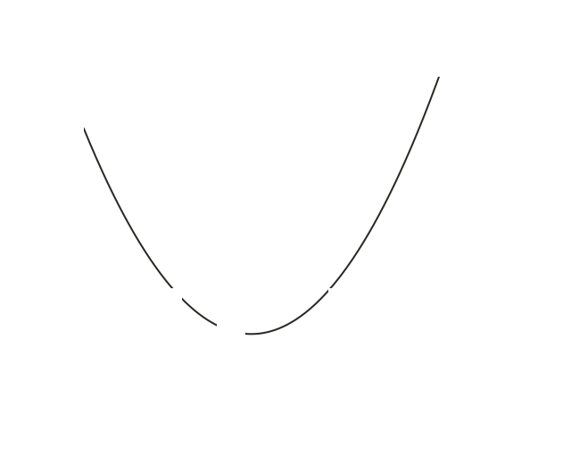
Pick an answer. If it's wrong, the feedback tells you which mistake it was.
Write the blanks in your book first, then tap each one to check.
Read each card, then follow the worked examples one step at a time.
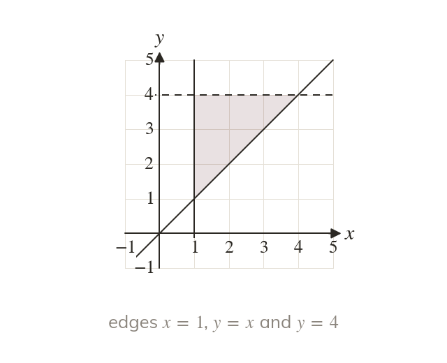
Write down the equation of each line or curve on the edge of the region. Here they are , and
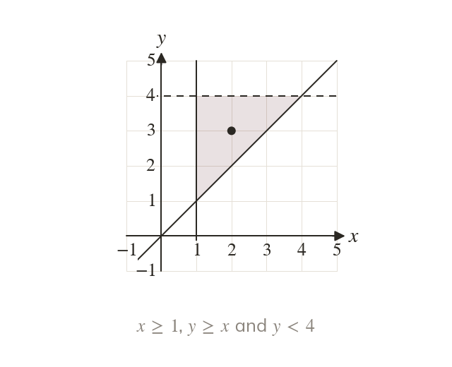
Substitute a point inside the region, such as into each boundary. It gives , and which fixes each sign.
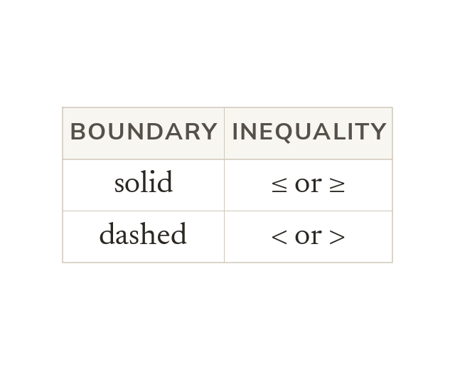
A solid boundary is included, so its inequality is ≤ or ≥. A dashed boundary is not included, so its inequality is < or >.
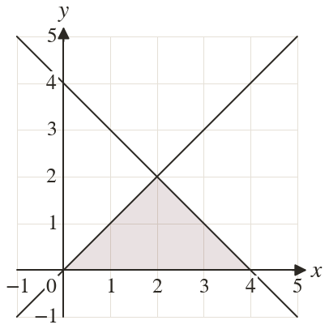
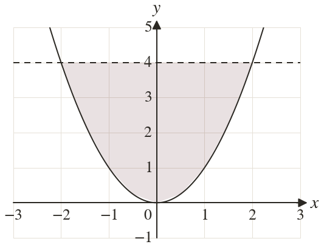
Pick an answer. If it's wrong, the feedback tells you which mistake it was.
Write the blanks in your book first, then tap each one to check.
Finished? Next lesson: 4.1 Cubic Graphs.
For each skill, tap the one that is true for you today. Your Revise pages start with anything you mark Not yet.
Your ratings are saved on this device only.
Log in, then search for a code to practise that skill.